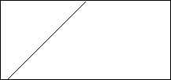
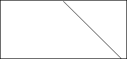
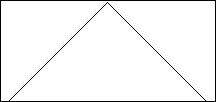

| First, an example. Recall
from an initial generation with a
single live cell the N = 3, S = 2 rule produces the pattern. |
|
 |
|
| Suppose the rule is replaced by its reflection. How will the
pattern change? In this case, the obvious guess is right. |
|
 |
|
| So the rule here should produce two lines, one going right, one
going left, right? That is the most frequent quess. Is it correct?
Think a moment, then look at the
answer. |
|
 |
|
| A few more examples illustrate
the richness of the behavior of one-dimensional binary N = 3 CA. |
| Changing the rules obviously can have a large influence on the
pattern that evolved. For some automata there is another type of sensitivity:
changing the initial conditions
can have a large effect. |
| Not surprisingly, two-dimensional
CA also exhibit a rich variety of
patterns. We cannot easily view the spacetime patterns of these. Rather, we present
pictures of a single generation. |
| The best-known of all CA is John Conway's
game of life. |
| With the remarkable range of behavior demonstrated by CA, a
natural question is can the behaviors be classified |
| If CA behavior can be classified, are there calculations to
predict the behavior? |